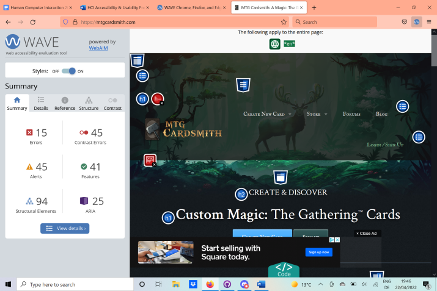
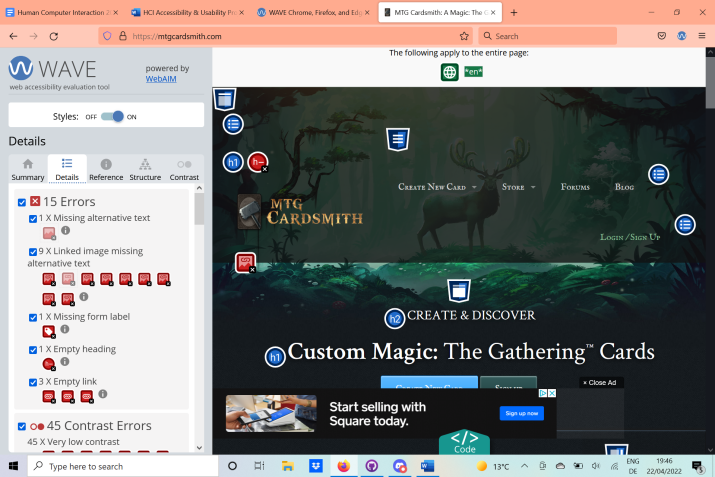
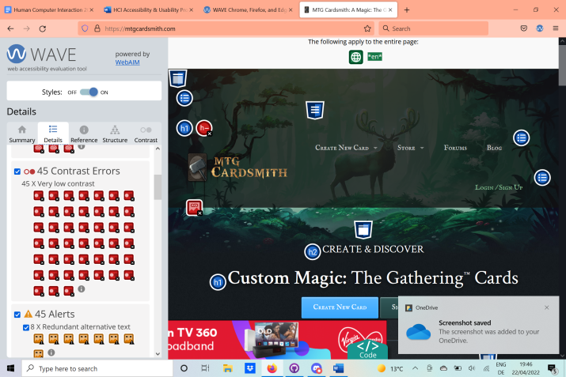
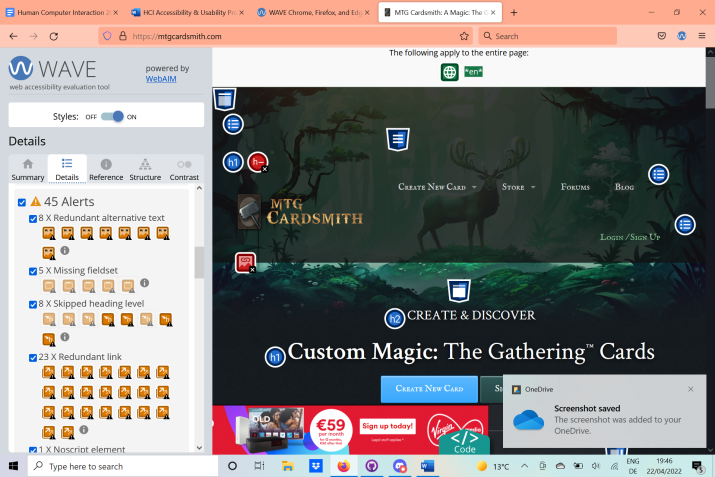
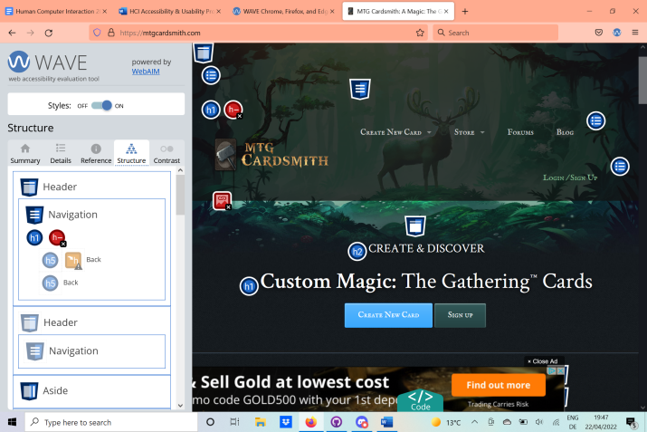
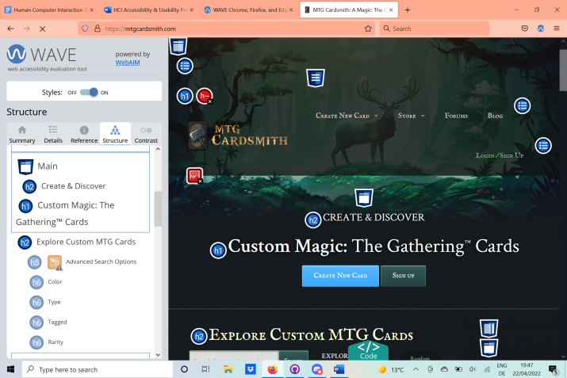
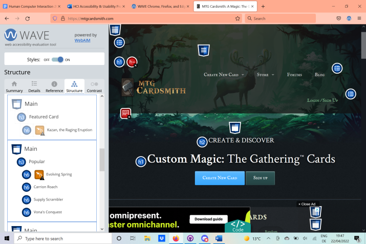
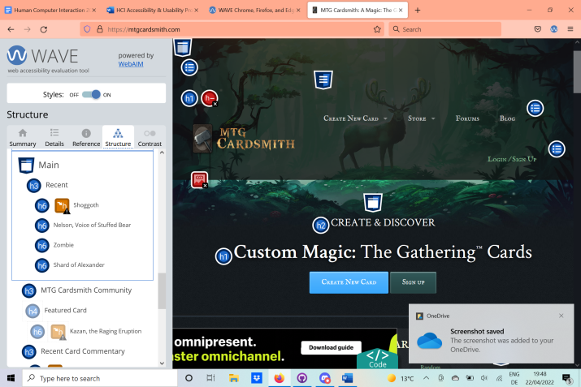
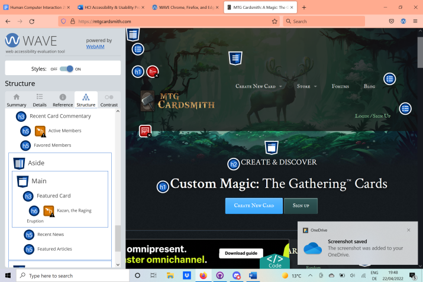
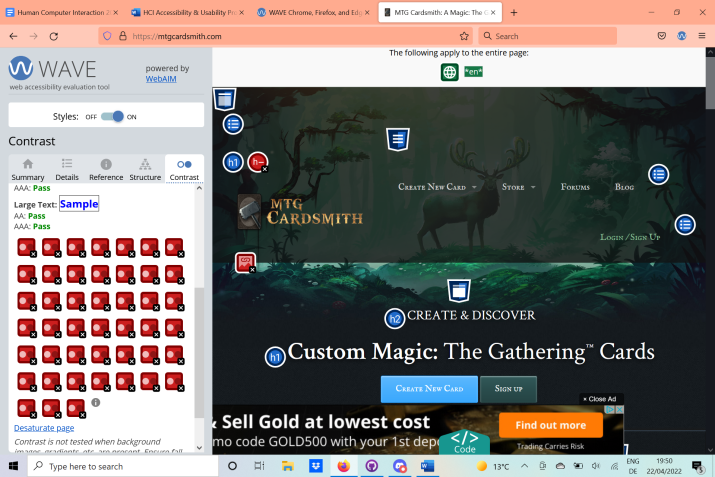

In summary, the site is effective, as you can create an MTG card. It is not perfect, as it doesn't always get the spacing right to make said custom cards look natural/like actual cards. However, the approximation to the real thing is close enough to serve its purpose and as such, after testing, I do deem the sight to be effective for its intended task.
Whilst not agregiously inneficient, still it isn't the smoothest of processes. The image size that the site accepts is outside of the range of a lot of images that you would find on the internet. It offers no in-site way of editing image size and, as such, forces you to edit the image yourself in a different piece of software before continuing with the card creation process. This can be at times frustrating. Otherwise, the process is reasonably streamlined and easy to follow.
This is where most of the downsides reveal themselves, as the experience of creating a card on mtgCardsmith.com is not the greatest. The aforementioned image issue being one such reason, but also just how the website is laid out. There are far too many adds that cover parts of the screen, that you have to constantly be clicking close for. The formating of the text upon the card at the end is very unsatisfactory as it doesn't take into account the card boarders on the right hand side, whencreating the card image. This makes it so that the subtypes of cards in particular, but also text in the main textbox is often hard to read and is placed over/under other aspects of the image. For the most part it isn't a problem for reading the card, as only small aspects of the text are covered and you can piece together what the card is meant to say, but it leads to a far less smooth-looking and satisfactory visual for your custom card. In my opinion, with modern tech, such formatting issues are easily fixable and I see no reason for why things are the way they are currently other than laziness in implementation. Satisfaction
Wave Report Screenshots










User's Summary of The Experience
Notes From Test - New User:
1. Success: Attempt 3 - With Minimal Assistance
2. Success: Attempt 1 - Unexpected Method
3. Success: Attempt 2 - Had to Redo Process
- Pop-up Ads are annoying
- Format attracts the eye down to pictures
- Back arrow on site doesn't do what you would expect
- Random Card button too small
- Layout is intuitive and well thought out in the after-card-selection screen
- Artist's name found before creator's name
- Search Functionality issue -> autocorrects usernames (Makes more awkward), Tags Unclear
- Explore Cards Feature could be better structured
- Lime green does not imply click-ability
- Recent News section is distracting, should be replaced with a way to search for artworks to use
- Can't copy images directly from another site (Have to download and upload
- Adding mana symbols should be doable using drag and drop as well as clicking
- No description as to what certain symbols represent (minor issue)
- Very few obvious pieces of feedback from buttons on the site, with upon mousing over and upon clicking.
- Actual symbols should show up in text box when creating card, not just "U" and the like
- No system feedback for saving cards, No Autosaving
- Create an account button doesn't take you to the create an account screen from multiple pages
- Errors given during account creation are unrelated and unhelpful. Couldn't actually set up an account.
- Have to have an account to save a card - should this be the case? -> Why isn't this made clear earlier in the process.
- Doesn't generate card correctly in preview, aliasing of control characters
- Aliasing present on site when scrolling, light blue lines sometimes appear.
- Add a card to your library
- Purchase an item from the store
1. Found easily
2. Button was used, card found easily
3. Try drag and drop, doesn't work.
Image size minimum is far too high.
Ordering system message is not noticeable enough.
Adding mana cost, no issue.
Selection options for Card Category aren't extensive enough.
Card still doesn't load correctly.
Power and Toughness box not clear enough.
Button to make things italicised requires selecting text, which isn't obvious. (Was second guess that it worked this way)
4. Brings you to random page.
Doesn't save card when you Login to Save.
Aliasing persists.
5. Only option given for country is the United States.
Saves card details automatically, without asking.
Error messages are not helpful, doesn't say what is missing.